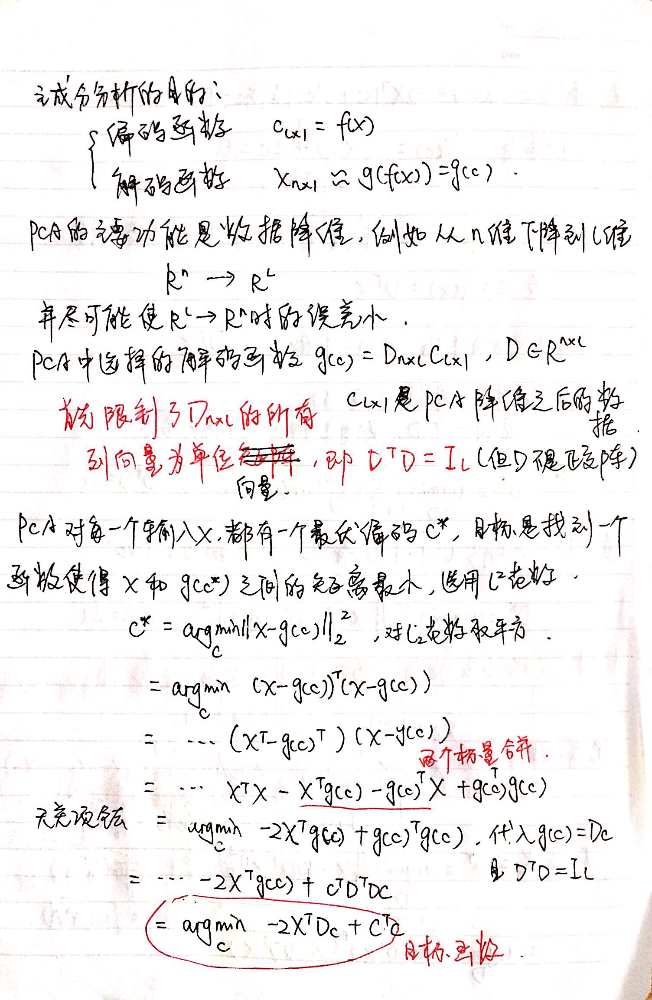
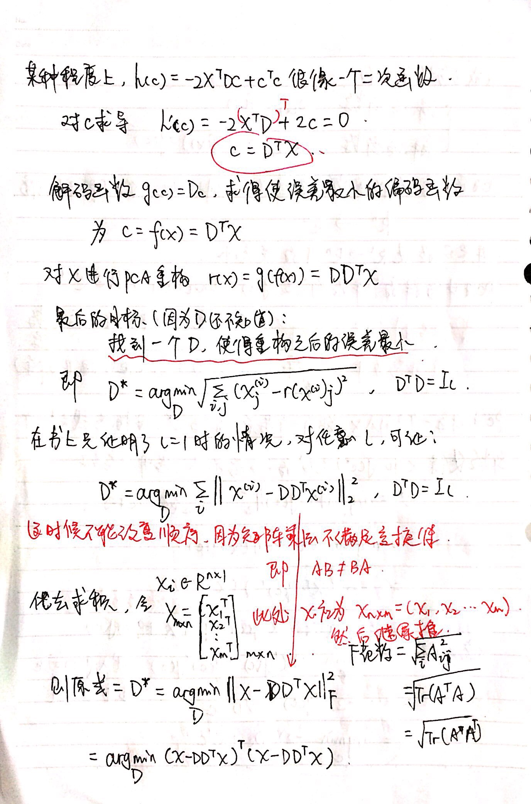
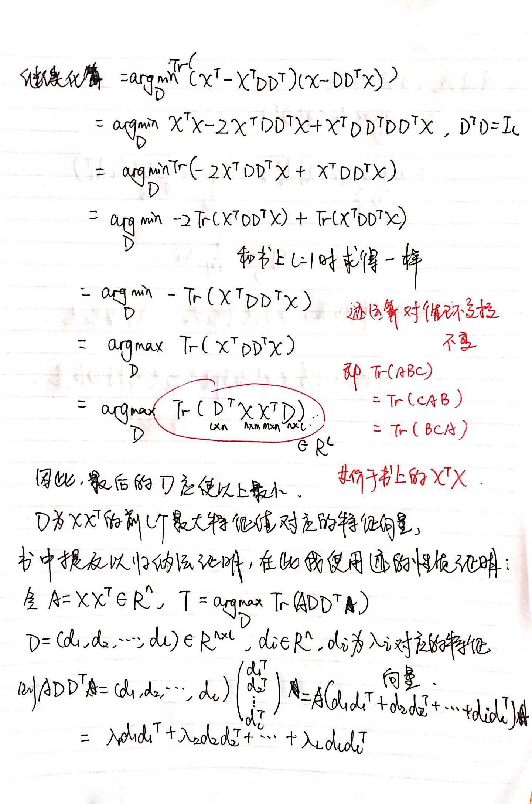

PCA 主成分分析推导及 Python 实现
此证明推导来源于 Deep Learning 这本书，和原书不同的在于:
- 我证明了当 $l>1$ 时的普遍情况下的目标函数。
- 原书提出使用归纳法证明 $D$ 应为 $X^TX$ 前 $l$ 个最大特征值对应的特征向量 (并未证明)，在此我使用迹与特征值的性质求证最后的误差为 $\sum^l_{i=1}\lambda_i$，其中 $\lambda_i$ 为 $X^TX$ 的特征值。
推导




Python 实现
下载鸢尾花数据集:
wget http://archive.ics.uci.edu/ml/machine-learning-databases/iris/bezdekIris.data -O iris.csv在此对比了自己实现的 PCA 和 sklearn 实现的 PCA 之间的效果和误差。
误差: 12.909879891741815 3.8993133189625775
效果如图:

PCA 实现:
import utils
import numpy as np
import matplotlib.pyplot as plt
from sklearn import decomposition
# 读取数据
iris_data, iris_label = utils.read_iris('../data/iris.csv')
iris_data -= np.mean(iris_data, axis=0)
# target: 150*4
def pca(target, l):
# l 必须小于 n，这里 n=4;
assert l<=target.shape[1]
# 计算 X^T*X 的特征向量和特征值
# 参考 https://docs.scipy.org/doc/numpy-1.15.1/reference/generated/numpy.linalg.eig.html
eig_value, eig_vector = np.linalg.eig(np.dot(target.T, target))
index = np.argsort(eig_value)
eig_vector = eig_vector[index]
# 取前 l 最大的特征值对应的特征向量
# D: N*L
D = eig_vector[:l, :]
D = np.transpose(D, (1, 0))
# 解码计算误差, frobenius norm
# X-DD^TX
error = np.linalg.norm(target - np.dot(np.dot(D, D.T), target.T).T)
return np.dot(target, D), error
# 150*2
result1, self_implemented_error = pca(iris_data, 2)
f = plt.figure(figsize=(16,9))
c = ['#ff0000', '#ffff00', '#00ff00', '#00ffff']
plt.subplot(1, 2, 1)
plt.title('self-implemented PCA')
for i in [0, 1, 2]:
plt.plot(result1[iris_label == i, 0].flatten(), result1[iris_label == i, 1].flatten(), '.', c=c[i])
plt.legend(['0', '1', '2'])
plt.subplot(1, 2, 2)
plt.title('sklearn PCA')
# 150*2
model = decomposition.pca.PCA(n_components=2).fit(iris_data)
result2 = model.transform(iris_data)
pca_error = np.linalg.norm(iris_data - model.inverse_transform(result2))
for i in [0, 1, 2]:
plt.plot(result2[iris_label==i, 0].flatten(), result2[iris_label==i, 1].flatten(), '.', c=c[i])
plt.legend(['0', '1', '2'])
plt.grid()
plt.show()
print(self_implemented_error, pca_error)